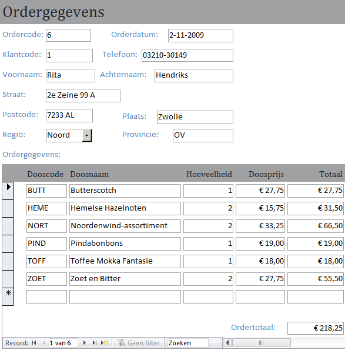
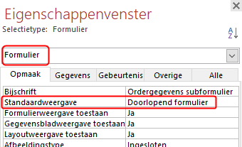

Berekening van het totale orderbedrag op een formulier.
Wijzig het formulier dat gemaakt is in Taak: Invoerformulier Orders zo dat ook het
totale orderbedrag berekend en getoond wordt.
Figuur 1: Orders met totaalbedrag

-
Open de database snoep2016.accdb.
-
Open formulier Ordergegevens subformulier in
Ontwerpweergave.
-
Selecteer in het eigenschappenvenster het type
Formulier en stel dan
Standaardweergave in op Doorlopend
formulier.
Deze instelling is nodig omdat anders het totaal niet kan worden
berekend.
Figuur 2: Standaardweergave subformulier

-
Maak de verticale ruimte voor de formuliervoettekst wat groter door de
onderkant naar beneden te slepen.
-
Selecteer en teken een rechthoekig kader in de formuliervoettekst waar het
totaalbedrag moet komen.
-
Stel de waarde voor de eigenschap Besturingselementbron
van het tekstvak in op
=Som([Totaal]) en de waarde van
eigenschap Notatie op Valuta.
-
Sluit het subformulier en bewaar de wijzigingen.
-
Open formulier Ordergegevens hoofdformulier en controleer
of alles in orde en naar wens is.